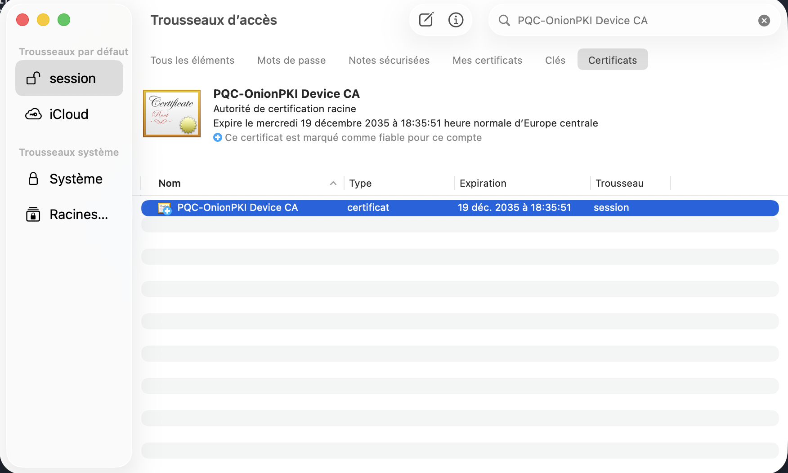
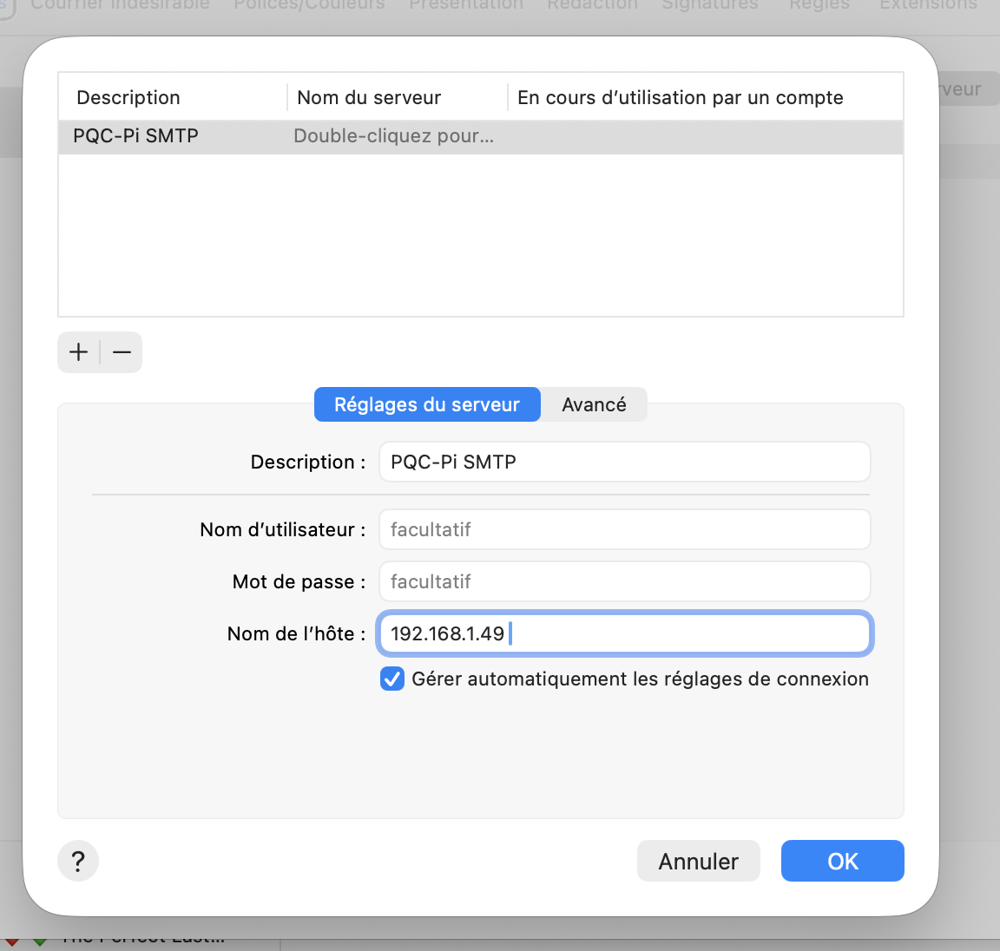

PQC-OnionPKI
PQC-OnionPKI est un projet d’ingénierie appliquée autour d’une question très concrète : jusqu’où peut-on intégrer aujourd’hui une infrastructure de confiance post-quantique dans un environnement réel sans modifier les clients classiques ? Pour y répondre, j’ai construit une PKI sur Raspberry Pi, durci l’hôte, ajouté un accès d’administration via Tor, expérimenté une chaîne X.509 entièrement post-quantique, puis adapté l’architecture face aux limites réelles de macOS et des clients mail. La solution opérationnelle conserve ainsi une couche de confiance classique pour l’interopérabilité, tout en ajoutant une signature ML-DSA-65 indépendante sur les e-mails sortants.
1. Pourquoi ce projet ?
La disponibilité d’algorithmes post-quantiques ne signifie pas qu’ils peuvent être déployés immédiatement dans les systèmes existants. Une PKI ne se limite pas à générer une paire de clés : elle doit faire fonctionner des formats de certificats, des chaînes de confiance, des clients, des systèmes d’exploitation, des protocoles réseau et des mécanismes d’authentification déjà largement déployés.
Le véritable problème
Le projet vise donc moins à démontrer que « ML-DSA fonctionne » qu’à étudier le passage entre une primitive cryptographique moderne et un service d’infrastructure utilisable. Le cas d’usage choisi — l’e-mail — est volontairement difficile : il traverse des relais, des politiques anti-spam, des transformations de métadonnées et des clients qui n’exposent pas toujours les informations transportées.
Une approche expérimentale
Les incompatibilités rencontrées ne sont pas masquées : elles font partie du résultat. Lorsqu’une architecture théoriquement correcte ne peut pas être exploitée par macOS ou un client mail classique, l’objectif est de comprendre précisément pourquoi, puis de faire évoluer l’architecture sans perdre la propriété de sécurité recherchée.
2. Architecture générale
Le Raspberry Pi constitue un hôte dédié à la PKI et aux services associés. Cette séparation volontaire évite d’y héberger des applications sans rapport avec la fonction de confiance et simplifie à la fois le durcissement, l’audit et la compréhension du périmètre.
Couche système
- Raspberry Pi 4 sous Debian.
- SSH dédié et durci, avec accès distant via Tor onion service.
- Filtrage réseau avec UFW reposant sur nftables/iptables-nft.
- Fail2ban et paramètres de durcissement système.
- Répertoires et permissions séparant les secrets cryptographiques des composants applicatifs.
Couche cryptographique
- OpenSSL pour les opérations PKI classiques, CSR, certificats et TLS.
- liboqs / OpenSSL-OQS pour tester les algorithmes post-quantiques dans des workflows proches de X.509.
- ML-DSA-65 pour la signature post-quantique des messages.
- Deux architectures de confiance distinctes afin de séparer faisabilité cryptographique et compatibilité opérationnelle.
3. L’histoire des certificats : du « tout PQC » à une architecture hybride
C’est probablement la partie la plus importante du projet. La première idée était de pousser l’expérience jusqu’au bout : construire une chaîne de certificats entièrement post-quantique. Cryptographiquement, l’expérience fonctionne. C’est l’écosystème autour qui impose ensuite une adaptation.
Une hiérarchie minimale de type Root CA → Mail CA → certificats applicatifs est générée avec des signatures post-quantiques via OpenSSL-OQS/liboqs. La génération de clés, l’émission des certificats et les vérifications cryptographiques sont fonctionnelles.
Une fois les certificats produits, l’objectif est de les utiliser sur un client classique. C’est là que la limite devient concrète : le trousseau macOS et les principaux clients mail ne savent pas exploiter nativement cette chaîne X.509 post-quantique. Le certificat peut être valable d’un point de vue cryptographique tout en restant inutilisable par l’application qui doit lui faire confiance.
Plutôt que de forcer une chaîne non supportée, l’architecture est séparée en deux fonctions : les certificats classiques restent responsables de l’interopérabilité et de l’authentification avec l’écosystème existant, tandis que la signature post-quantique devient une preuve indépendante appliquée au message lui-même.
Un certificat client compatible est exporté dans un conteneur personnel de type PKCS#12 puis importé dans macOS. La CA de confiance est installée dans le trousseau afin que le client puisse établir correctement la chaîne. Cette étape permet de conserver une expérience utilisateur standard pour la configuration SMTP.
La PKI « tout PQC » reste un artefact de recherche démontrant la faisabilité cryptographique. La variante hybride est celle utilisée pour le fonctionnement concret : certificats classiques là où les clients l’imposent, ML-DSA-65 là où une propriété post-quantique peut être ajoutée sans casser l’interopérabilité.



4. Ajouter une signature post-quantique aux e-mails sans modifier le client
Une fois le problème de compatibilité des certificats isolé, le projet se concentre sur la propriété réellement recherchée : fournir une preuve post-quantique de l’intégrité et de l’authenticité du message. L’intégration est réalisée au niveau du relais Postfix afin que le client mail n’ait aucune logique PQC spécifique à implémenter.
Pourquoi une canonicalisation ?
Un message mail peut subir des variations de représentation entre son émission et son traitement. Pour pouvoir vérifier une signature de façon reproductible, le système définit donc une représentation déterministe des éléments couverts. Le même contenu doit conduire au même payload de vérification.
Intégration Postfix
Le script de signature est intégré au pipeline Postfix comme filtre de contenu et s’exécute sous un utilisateur non privilégié. L’idée est de déplacer la cryptographie vers l’infrastructure plutôt que d’imposer un plugin ou une modification à Apple Mail, Gmail ou Outlook.
Ces mesures obtenues sur Raspberry Pi 4 montrent qu’au niveau de ce prototype, le coût de la signature ne constitue pas le principal obstacle opérationnel. Les difficultés les plus structurantes viennent davantage de l’intégration dans les formats et comportements des clients existants.

5. Durcir l’hôte qui porte la confiance
Héberger une PKI sur un Raspberry Pi ne suffit pas : le système qui contient les clés et exécute les opérations cryptographiques devient lui-même une partie de la chaîne de confiance. Le projet inclut donc un travail de réduction de surface d’attaque et de contrôle des accès.
Accès SSH
L’administration utilise SSH avec une configuration dédiée et des clés client. L’accès distant est également rendu possible via un service Tor onion afin d’éviter l’exposition directe d’une interface d’administration sur une adresse IP publique.
Filtrage réseau
UFW est utilisé comme couche de gestion du filtrage réseau, avec contrôle des ports nécessaires au fonctionnement. Les services réellement à l’écoute sont vérifiés afin de limiter le périmètre exposé.
Défense en profondeur
Fail2ban, paramètres de durcissement système, séparation des permissions, inspection des journaux et revue des services complètent la protection. Le projet ne prétend toutefois pas reproduire les garanties d’un HSM certifié.

6. Ce que les tests sur les clients mail ont montré
Après avoir obtenu une signature correcte côté serveur, une seconde difficulté apparaît : une preuve transportée dans un e-mail n’est utile que si elle survit à la chaîne de livraison et peut être retrouvée ou vérifiée.
Les headers personnalisés ne sont pas une interface fiable
Des métadonnées de type X-PQC-* peuvent être correctement injectées côté serveur mais devenir
invisibles, être normalisées ou ne pas être présentées par Gmail, Apple Mail ou Outlook. La justesse cryptographique
côté relais ne garantit donc pas la visibilité côté utilisateur.
L’architecture doit s’adapter au système réel
Cette observation conduit à distinguer la preuve transportée techniquement de la preuve exposée à l’utilisateur. Le passage d’une approche centrée sur des headers à une preuve pouvant être rendue visible dans le contenu est une conséquence directe des tests d’intégration.
C’est l’un des enseignements les plus intéressants du projet : un mécanisme peut être valide au niveau de la primitive, correctement exécuté sur le serveur et pourtant échouer à devenir une fonctionnalité réellement utilisable à cause d’un comportement intermédiaire du protocole ou du client.
7. Ce que ce projet m’a appris
La migration PQC est un problème de système
L’algorithme n’est qu’une partie du sujet. Les certificats, les magasins de confiance, les clients, les protocoles et les opérations de déploiement déterminent souvent ce qui est réellement possible.
Une architecture hybride peut être plus réaliste
La coexistence classique / post-quantique permet de conserver les dépendances héritées là où elles sont encore obligatoires, tout en introduisant progressivement de nouvelles garanties cryptographiques.
Les échecs d’intégration sont utiles
Le refus d’un certificat ou la disparition d’un header ne sont pas seulement des bugs à contourner : ils renseignent directement sur la maturité de l’écosystème et influencent la conception cible.
Le rapport technique complet documente le projet de manière reproductible : installation de l’hôte, durcissement, configuration Tor, environnement OpenSSL / liboqs, architectures de PKI, tests de signature, intégration Postfix et comportements observés dans les clients mail.
Ouvrir le rapport technique complet